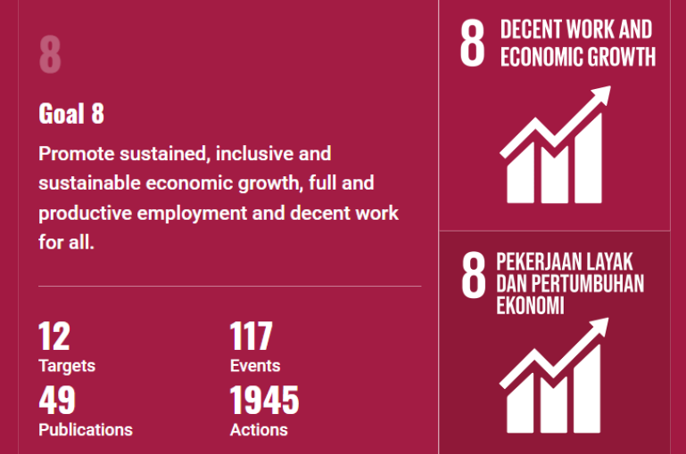

💌SDGS/TPB Tujuan ke-8💌
Website ini akan membahas secara signifikan mengenai tujuan ke-8 SDGs yaitu Pekerjaan Layak dan Pertumbuhan
Ekonomi atau Decent Work and Economic Growth. Tujuan yang ke-8 ini berusaha untuk mendorong pertumbuhan
ekonomi yang berkelanjutan, inklusif dan berkesinambungan, lapangan kerja yang penuh dan produktif, serta
pekerjaan yang layak untuk semua.
🎀Target-targetnya meliputi :
1. Mempertahankan pertumbuhan ekonomi per kapita sesuai dengan kondisi nasional dan, khususnya,
setidaknya 7 persen pertumbuhan produk domestik bruto per tahun di negara kurang berkembang
Indikatornya adalah
Nilai subsektor tanaman pangan, hortikultura, perkebunan dan peternakan dalam PDRB (ADHK)
Nilai subsektor kehutanan dalam PDRB DIY (ADHK)
Nilai subsektor perikanan dalam PDRB DIY (ADHK)
2. Mencapai tingkat produktivitas ekonomi tinggi, melalui diversifikasi, peningkatan dan inovasi
teknologi, termasuk melalui fokus pada sektor yang memberi nilai tambah tinggi dan padat karya
Indikatornya adalah Laju pertumbuhan PDRB per tenaga kerja.
3. Menggalakkan kebijakan pembangunan yang mendukung kegiatan produktif, penciptaan lapangan
kerja layak, kewirausahaan, kreativitas dan inovasi, dan mendorong formalisasi dan pertumbuhan usaha mikro,
kecil, dan menengah, termasuk melalui akses terhadap jasa keuangan.
Indikatornya adalah :
Proporsi Lapangan Kerja Informal Sektor Non Pertanian
Persentase Tenaga Kerja Formal
Persentase Tenaga Kerja Informal Sektor Pertanian
Proporsi kredit UMKM terhadap total kredit
Jumlah pembiayaan yang diperoleh Koperasi dan UKM yang dibina pada tahun
4. Penciptaan lapangan kerja layak
Pada tahun 2030, mencapai pekerjaan tetap dan produktif dan pekerjaan yang layak bagi semua perempuan dan
laki-laki, termasuk bagi pemuda dan penyandang disabilitas, dan upah yang sama untuk pekerjaan yang sama
nilainya
Indikatornya adalah :
Upah rata-rata perbulan
Tingkat pengangguran terbuka (TPT)
Persentase setengah pengangguran
5. Mendorong formalisasi dan pertumbuhan usaha kecil dan menengah (UMKM)
Melindungi hak-hak tenaga kerja dan mempromosikan lingkungan kerja yang aman dan terjamin bagi semua
pekerja, termasuk pekerja migran, khususnya pekerja migran perempuan, dan mereka yang bekerja dalam
pekerjaan berbahaya
Indikatornya adalah :
Jumlah perusahaan yang menerapkan norma K3 (aturan yang berkaitan dengan keselamatan dan
kesehatan kerja).
6. Mengurangi proporsi usia muda yang tidak bekerja, tidak menempuh pendidikan atau pelatihan
(NEET), pada tahun 2020
Indikatornya adalah :
Persentase Usia Muda (15-24) yang sedang Tidak Sekolah, Bekerja, atau Mengikuti Pelatihan (NEET)
7. Mempromosikan pariwisata berkelanjutan
Pada tahun 2030, menyusun dan melaksanakan kebijakan untuk mempromosikan pariwisata berkelanjutan yang
menciptakan lapangan kerja dan mempromosikan budaya dan produk lokal.
Indikatornya adalah :
Meningkatnya nilai sektor akomodasi makan minum dalam PDRB
Jumlah Wisatawan Nusantara
Jumlah Wisatawan Mancanegara
8. Memperkuat lembaga keuangan
.svg)
.svg)
.svg)
🎀 Sasaran SDGs/TPB 2024 adalah Jumlah penyusunan kajian untuk kebijakan dan regulasi penanggulangan
bencana (kajian) sebanyak 50 dokumen.
Tahun dasar 2019:183 dokumen (Sumber data: Badan Nasional Penanggulangan Bencana).
🎀Instansi atau Lembaga Pelaksana :
1.Kementerian Koordinator Bidang Pembangunan Manusia dan Kebudayaan
2. Kementerian Perencanaan Pembangunan Nasional / Badan Perencanaan Pembangunan Nasional
3. Kementerian Keuangan
4. Kementerian Pekerjaan Umum dan Perumahan Rakyat
5. Kementerian Sosial
6. Kementerian Dalam Negeri
7. Badan Nasional Penanggulangan Bencana
8. Pemerintah Daerah Provinsi
9. Pemerintah Daerah Kabupaten / Kota.
Tujuan ke-8 SDGs/TPB ini sangat penting dan relevan bagi Indonesia karena masalah tenaga kerja dan ekonomi
masih menjadi tantangan besar. Hingga saat ini, banyak masyarakat yang bekerja dengan upah rendah dan
kondisi kerja yang tidak layak. Selain itu, banyak kasus-kasus korupsi yang menghambat pertumbuhan ekonomi.
Dengan mendorong pekerjaan yang layak dan pertumbuhan ekonomi, Indonesia bisa memperkuat daya saingnya di
tingkat global, mengurangi kesenjangan sosial dan meningkatkan kualitas hidup.
Indonesia telah melakukan berbagai bentuk kerjasama untuk mencapai tujuan SDGs. Salah satunya adalah PBB
(Perserikatan Bangsa-Bangsa), yang bekerjasama dengan Pemerintah Indonesia, organisasi masyarakat sipil,
institusi, dan sektor swasta untuk mencapai SDGs melalui pendekatan yang lebih terpadu. UNDP (United Nations
Development Programme) juga bekerja sama dengan Badan Perencanaan Pembangunan Nasional (BAPPENAS) untuk
mempercepat transisi ekonomi yang berkelanjutan dan eksklusif.